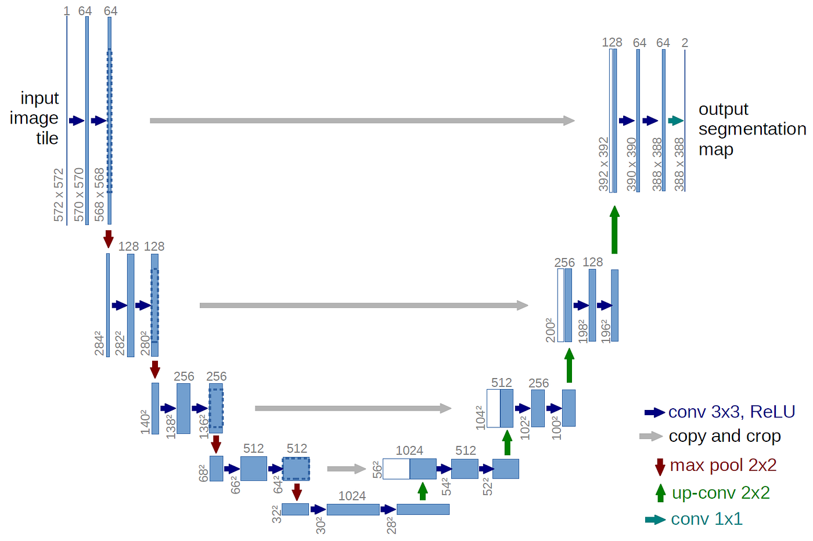
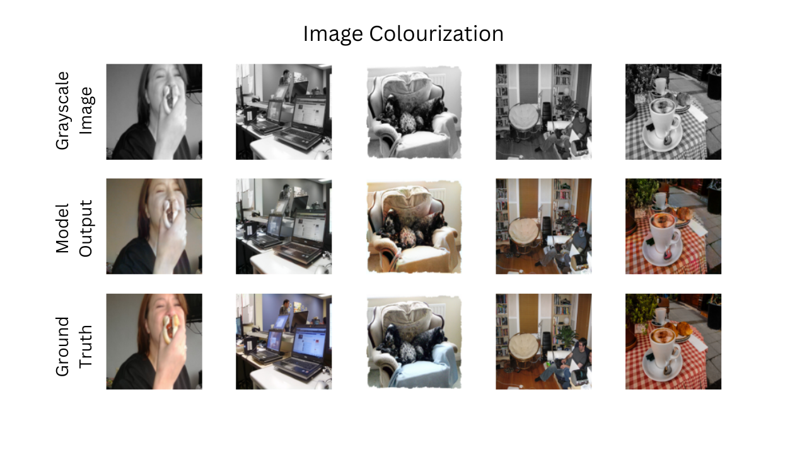

Bringing Color to Black and White Images with Deep Learning
Introduction
In the realm of computer vision, few tasks capture the imagination quite like image colorization—transforming grayscale photographs into vibrant, full-color images. What was once a painstaking manual process performed by skilled artists can now be automated using deep learning techniques. In this article, I'll walk through my implementation of a conditional GAN-based image colorization system that breathes new life into black and white imagery.
The Challenge of Colorization
Colorizing black and white images isn't merely about adding colors—it's about adding the *right* colors in a way that appears natural and consistent. This presents several unique challenges:
- Ambiguity: Many objects can have multiple plausible color schemes. A car could be red, blue, or any other color.
- Context sensitivity: The correct color often depends on surrounding elements and global context.
- Semantic understanding: Effective colorization requires recognizing objects and understanding what colors they typically have.
Traditional approaches often involve extensive handcrafted features and rules. Deep learning offers a more elegant solution by learning these complex relationships directly from data.
Leveraging Conditional GANs
My approach uses a conditional Generative Adversarial Network (cGAN), specifically inspired by the Pix2Pix architecture. GANs consist of two networks engaged in a minimax game:
- A generator that tries to create realistic colored images
- A discriminator that tries to distinguish between real and generated images
The "conditional" aspect means our generator doesn't create images from random noise alone but is conditioned on input grayscale images. This provides crucial structural information for the colorization process.
The Technical Architecture
Color Space Transformation
Rather than working directly with RGB values, the model operates in the L*a*b* color space, which separates lightness (L*) from color information (a* and b*). This approach has several advantages:
# Converting RGB to L*a*b*
img_lab = rgb2lab(img_file).astype("float32")
L = img_lab[[0], ...] / 50.0 - 1.0 # Between -1 and 1
ab = img_lab[[1, 2], ...] / 110.0 # Between -1 and 1The model uses the L channel (grayscale intensity) as input and predicts the a* and b* channels. This separation allows the network to focus solely on adding color without modifying the underlying structure.
Generator Architecture
The generator follows a U-Net architecture with skip connections, which is crucial for preserving spatial details:
The U-Net consists of:
- An encoder path that downsamples the image, capturing increasingly abstract features
- A decoder path that upsamples back to the original resolution
- Skip connections that allow fine details to flow directly from encoder to decoder
I implemented two variants:
- A custom U-Net built from scratch
- A ResNet18-based U-Net leveraging transfer learning
The ResNet-based approach showed superior performance, as it benefits from pretrained weights that already understand image structures.
Discriminator Design
The discriminator uses a PatchGAN architecture, which classifies whether each N×N patch in an image is real or fake:
class PatchDiscriminator(nn.Module):
def __init__(self, in_channels=3, features=[64, 128, 256, 512]):
# Implementation details...This patch-based approach is particularly effective for texture and color patterns, as it focuses on local coherence rather than global structure.
Training Methodology
Loss Function
The training uses a hybrid loss function combining:
- Adversarial loss: The standard GAN objective that pushes the generator to create realistic colorizations
- L1 loss: Direct pixel-wise difference between predicted and ground truth colors
# Generator loss
G_fake_loss = bce(D_fake, torch.ones_like(D_fake))
L1_loss = L1(fake_color, ab) * config.L1_LAMBDA
G_loss = G_fake_loss + L1_lossThe L1 component (weighted by λ=100) ensures color accuracy, while the adversarial component encourages perceptual realism.
Two-Phase Training
For best results, I implemented a two-phase training approach:
- Pretraining phase: The generator is trained on the L1 loss alone to establish basic colorization capabilities
- Adversarial phase: The full GAN is trained with both generator and discriminator updating in alternating steps
This approach helps stabilize training and prevent mode collapse—a common issue in GAN training where the generator produces limited varieties of outputs.
Results and Evaluation
The results demonstrate impressive colorization abilities, especially for natural scenes and common objects. Here are some examples:
I evaluated the model on the COCO dataset validation split. The model excels at:
- Natural landscapes (sky, vegetation, water)
- Common objects with predictable colors
- General scene colorization
It struggles more with:
- Objects that have highly variable colors
- Unusual lighting conditions
- Fine details in complex scenes
Key Insights and Lessons
Through developing this project, I gained several valuable insights:
- Data preprocessing matters: Normalizing input/output ranges and working in L*a*b* space significantly improves results.
- Loss function balance is critical: The λ weighting between adversarial and L1 losses greatly affects the output style—higher L1 weights produce more conservative but accurate colors.
- Architecture choices have tradeoffs:
- Custom U-Net: More flexible, slower convergence
- ResNet-based: Faster convergence, better semantic understanding
- Visualization during training is essential for diagnosing issues and understanding model behavior.
Implementation Details
The implementation uses PyTorch with mixed precision training for efficiency:
with torch.cuda.amp.autocast():
fake_color = gen(Ls)
fake_image = torch.cat([Ls, fake_color], dim=1)
# More training code...This allows the model to train effectively even on consumer-grade GPUs with 8-12GB of VRAM.
Future Improvements
While the current implementation produces impressive results, several enhancements could push performance further:
- User hints: Allowing users to provide color hints for specific regions
- Class conditioning: Incorporating semantic information to improve color accuracy
- Attention mechanisms: Adding attention to help the model focus on relevant contextual information
Conclusion
Deep learning-based image colorization represents a fascinating intersection of computer vision, machine learning, and art. The conditional GAN approach demonstrates how we can teach machines to perform tasks that once required significant human artistic judgment.
By leveraging modern architectures like U-Net and PatchGAN, along with carefully designed loss functions and training strategies, we can create systems that bring the past to life through colorization. The techniques explored in this project extend beyond colorization alone and can be applied to various image-to-image translation tasks.
The complete implementation is available on GitHub with detailed documentation and examples.
Back to Blog